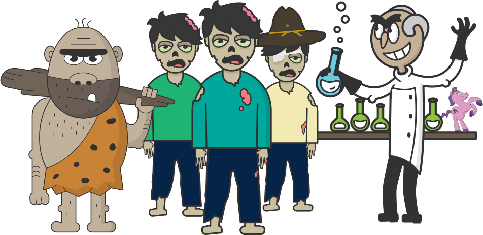
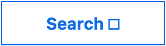
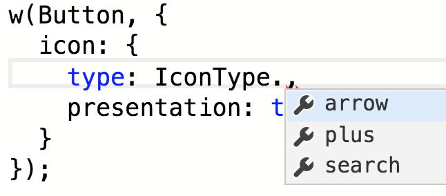

Escape the Office
[ graphic? ]
Who is this Sarah person?
- Dojo 2 widgets
- accessibility
- herds cats
Typescript is a design tool
Design?

Who are you designing for?
How will they interact
with your code?

An icon button case study:
 •
•

Requirements:
- The icon is optional
- Alt text is necessary if the icon adds meaning
- There is a predetermined set of possible icons
Take 1:
interface ButtonProperties {
label?: text;
iconType?: string;
iconAltText?: string;
}
w(Button, {
iconType: 'search'
});
Yes, this looks right. I am done here.
Take 2:
interface ButtonProperties {
label?: string;
icon?: {
type: string;
altText: string;
};
}
Fine, I will smash my keys until this error goes away
w(Button, {
icon: {
type: 'search',
altText: 'search'
}
});
Let's break the button interface
Email Subject: Where do I find icon types?
Body:
For some reasonisn't working. What do I do?icon.type: 'magnifying-glass'
What would help someone new to your code?
- IntelliSense/code hinting
- A more intuitive way to identify an icon as presentational
From earlier:
interface ButtonProperties {
label?: string;
icon?: {
type: string;
altText: string;
};
}
[interns profile pic]
w(Button, {
label: 'Search',
icon: {
type: 'magnifying-glass',
altText: 'search'
}
});

Take 3:
enum IconType {
plus,
arrow,
search
};
interface PresentationIcon {
type: IconType;
presentation: true;
}
interface ContentIcon {
type: IconType;
altText: string;
}
interface ButtonProperties {
icon?: PresentationIcon | ContentIcon;
}
[interns profile pic]
Oh hey, search looks right
TextInput addons: pony style

Where do you want to preserve control?
- Creating the
<input>element - All events handlers, validation, etc.
- Handling the association between
<input>and<label>
Where do you expect someone to add functionality?
- Tooltips
- Custom validation messages
- Addons
Extension points:
- createInput <= private
- createInputWrapper <= protected
- render <= protected
Flexibility vs. control
Let's talk about aria...
What is a <button>?
- A user-interactable element that performs an action on the page
- e.g. controlling a popup
- toggling a state
- submitting a form
- ??
typearia-expandedaria-haspopuparia-pressed- ...
Our solution:
interface ButtonProperties {
aria?: { [key: string]: string; };
popup?: boolean;
pressed?: boolean;
type?: 'submit' | 'reset' | 'button' | 'menu';
}
Escape Challenge!
Create an interface for a (optionally) hidden label on a text input
Requirements
- A visible label should be able to support something like
<span class="required">*</span> aria-labelis ignored by translation services- This may change, and you want to keep it as a future option